1048A10 AIR CLEANER FILTERING ELEMENT - REPLACE
- Path
- Procedures > 10 ENGINE UNIT > 1048 ENGINE AIR SUPPLY CIRCUIT > 1048A VACUUM AIR CIRCUIT > 1048A10 AIR CLEANER FILTERING ELEMENT - REPLACE
- Kind
- repair procedure (removal / refitting; the operation number is the code)
- Applies to
- all engines; all production periods
- Interactive page
- https://sloeber94.github.io/elrnDB-aGt/en/#/125001015
Applies to: engines: 2.0 JTS; all production periods
 Removing
Removing
 Refitting
RefittingPosition the vehicle on the ramp
Ensure that the ignition key is in the OFF position, then disconnect the negative battery terminal (-).
Name | Connector | |
|---|---|---|
- | Battery | See A1B BATTERY ( BATTERY NEGATIVE ) |
Proceed with removal
Op. 1016A40 IGNITION COIL COVER ON CYLINDER HEAD- R+R
Proceed with removal
1. Remove the cover for the junction unit in the engine compartment.
Op. 1048A59 PIPE from flow meter to throttle casing hose - R.R.
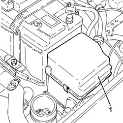
Applies to: engines: 2.0 JTS; all production periods
1. Rotate the engine compartment junction unit.
2. Disconnect the electrical connection from the engine compartment junction unit.
Name | Connector | |
|---|---|---|
2 | Engine compartment junction unit | See B1E ENGINE COMPARTMENT JUNCTION UNIT ( CROSSMEMBER ) |
Release the engine compartment junction unit from the hinges and move it to the side.
3. Remove the plug (3a), undo the nut (3b) and remove the engine compartment junction unit casing (3c) to the side.
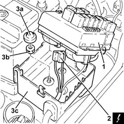
Applies to: engines: 2.0 JTS; all production periods
1. Undo the nuts (1a) and remove the engine compartment junction unit casing support (1b).
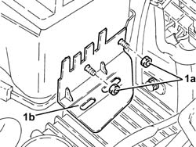
Applies to: engines: 2.0 JTS; all production periods
1. Undo the nut fixing the air filter to the battery drip tray.
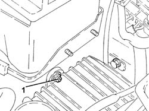
Applies to: engines: 2.0 JTS; all production periods
1. Disconnect the electrical connection from the air flow meter.
Name | Connector | |
|---|---|---|
1 | Air flow meter | See K41 AIR FLOW METER ( FRONT ) |
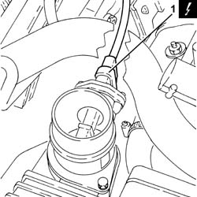
Applies to: engines: 2.0 JTS; all production periods
Proceed with removal
Op. 7055B54 UNDER-ENGINE GUARD - R R
1. Undo the nut (1a) and disconnect the earth lead (1b).
2. Loosen the band and disconnect the cold air intake from the air filter.
Name | Connector | |
|---|---|---|
1b | Battery earth | See C1 BATTERY EARTH |
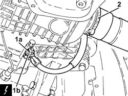
Applies to: engines: 2.0 JTS; all production periods
1. Remove the air filter (1a) complete with air flow meter (1b).
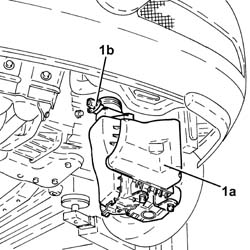
Applies to: engines: 2.0 JTS; all production periods
Refitting
RemovingReplace the air filter, complete with air flow meter, in its housing.
Connect the air filter cold air intake and secure it using the band.
Connect the earth lead and fix it using the nut.
Proceed with removal
Op. 7055B54 UNDER-ENGINE GUARD - R R.
Connect the electrical connection to the air flow meter.
Tighten the nuts fixing the air filter to the battery drip tray.
Place the engine compartment junction unit casing mounting in its housing and secure it using the nuts.
Place the engine compartment junction unit casing in its housing and fasten it using the nut.
Place the plug back in position.
Place the engine compartment junction unit in its housing securing it to the hinges.
Connect the electrical connection to the engine compartment junction unit and rotate it in its housing.
Place the engine compartment junction unit cover in position.
Proceed with refitting
Op. 1048A59 PIPE from flow meter to throttle casing hose - R.R..
Proceed with refitting
Op. 1016A40 IGNITION COIL COVER ON CYLINDER HEAD- R+R.
Connect the negative (-) battery terminal
Remove the car from the ramps.
Applies to: engines: 3.2 V6; all production periods
Removing
RefittingProceed with removal
Proceed with removal
1. Disconnect the electrical connection from the air flow meter.
Op. 5530B52 BATTERY DRIP TRAY/SUPPORT - R.R.
2. Release the earth lead from the band on the air filter.
Name | Connector | |
|---|---|---|
1 | Air flow meter | See K41 AIR FLOW METER ( FRONT ) |
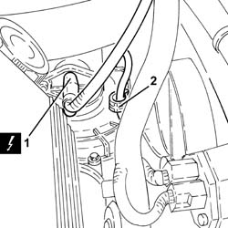
Applies to: engines: 3.2 V6; all production periods
1. Remove the air filter (1a) complete with air flow meter (1b), after releasing it from the cold air intake pipe and from the pins fastening it to the lower radiator crossmember.
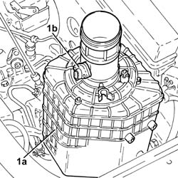
Applies to: engines: 3.2 V6; all production periods
Refitting
RemovingPlace the air filter, complete with flow meter, back in its housing, taking care to connect it to the cold air intake and then fit the pins on the air filter casing in the seats in the lower radiator crossmember.
Secure the earth lead to the collar on the air cleaner.
Connect the electrical connection to the air flow meter.
Proceed with refitting
Op. 5530B52 BATTERY DRIP TRAY/SUPPORT - R.R..
Proceed with refitting
Applies to: engines: 1.9 JTD 16V; all production periods
Removing
RefittingPosition the vehicle on the ramp
Proceed with removal
- 1016A10 sound-proofing cover - r + r
Proceed with removal
Proceed with removal
Op. 7055B54 UNDER-ENGINE GUARD - R R
Proceed with removal
1. Undo the bolts (1a) and move the bracket (1b) complete with turbocharger vane position actuator solenoid valve (1c) away from the air filter.
Op. 5530B52 BATTERY DRIP TRAY/SUPPORT - R.R.
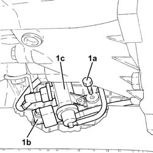
Applies to: engines: 1.9 JTD 16V; all production periods
1. Undo the bolt securing the cold air intake to the crossmember.
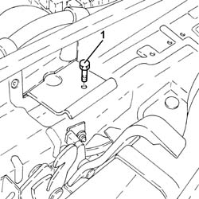
Applies to: engines: 1.9 JTD 16V; all production periods
1. Loosen the band (1a) and remove the cold air intake (1b).
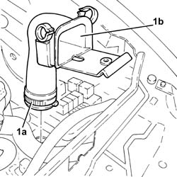
Applies to: engines: 1.9 JTD 16V; all production periods
1. Disconnect the electrical connection from the air flow meter.
Name | Connector | |
|---|---|---|
1 | Air flow meter | See K41 AIR FLOW METER ( FRONT ) |
2. Loosen the band fastening the corrugated hose to the air flow meter.
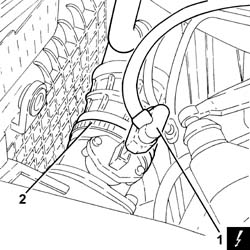
Applies to: engines: 1.9 JTD 16V; all production periods
1. Loosen the band and disconnect the upper coolant inlet hose to the radiator, thermostat side.
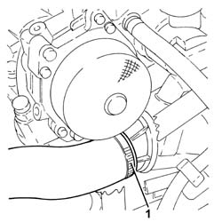
Applies to: engines: 1.9 JTD 16V; all production periods
1. Disconnect the electrical connections from the engine cooling fan resistor.
Name | Connector | |
|---|---|---|
1 | Engine fan adjustment resistor | See O10 ENGINE FAN ADJUSTMENT RESISTOR - 1 |
2. Disconnect the electrical connection from the engine fan motor.
Name | Connector | |
|---|---|---|
2 | Engine electric fan motor | See N11 ENGINE FAN MOTOR - 1 |
Move the junction unit complete with electrical wiring and container aside.
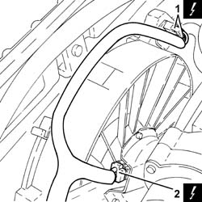
Applies to: engines: 1.9 JTD 16V; all production periods
1. Remove the air filter (1a) complete with air flow meter (1b).
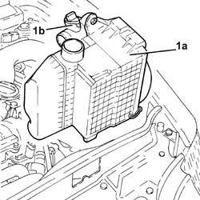
Applies to: engines: 1.9 JTD 16V; all production periods
1. Undo the bolts (1a) and separate the air flow meter (1b) from the air filter.
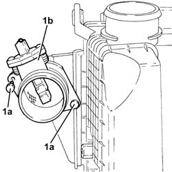
Applies to: engines: 1.9 JTD 16V; all production periods
Refitting
RemovingPlace the air flow meter in its housing on the air filter and secure it using the bolts.
Replace the air filter, complete with air flow meter, in its housing.
Refit the additional junction unit complete with electrical wiring and container in its housing.
Connect the electrical connection to the engine fan motor.
Connect the electrical connections to the resistor for the engine cooling fan.
Connect the upper coolant inlet hose to the radiator, thermostat side, and tighten the band.
Tighten the band securing the corrugated hose to the air flow meter.
Connect the electrical connection to the air flow meter.
Place the cold air intake in its housing and tighten the band.
Tighten the bolt fixing the cold air intake to the crossmember.
Refit in its seating the bracket complete with turbocharger vane position actuator solenoid, then secure it with the bolts.
Proceed with refitting
Op. 5530B52 BATTERY DRIP TRAY/SUPPORT - R.R..
Proceed with refitting
Proceed with refitting
Op. 7055B54 UNDER-ENGINE GUARD - R R.
Refill the engine cooling system with coolant
Op. 0010T20 COOLANT CHECK DENSITY AND TOP UP IF NECESSARY.
Proceed with refitting
- 1016A10 sound-proofing cover - r + r
.
Position the vehicle on the ramp
Applies to: engines: 1.8 T.SPARK; all production periods
Removing
RefittingPosition the vehicle on the ramp.
Proceed with the removal
Op. 5530B10 BATTERY - R+R
.
Proceed with the removal
Op. 5530B52 BATTERY DRIP TRAY/SUPPORT - R.R.
.
Proceed with the removal
Op. 1048A40 SLEEVE FROM AIR CLEANER TO FLOW METER - R + R
.
1. Remove the air cleaner assembly by releasing it from its mounts and disconnecting from the resonator.

Applies to: engines: 1.8 T.SPARK; all production periods
Refitting
RemovingRefit the air cleaner assembly by securing to the lower mounts and connecting to the resonator.
Proceed with the refitting
Op. 1048A40 SLEEVE FROM AIR CLEANER TO FLOW METER - R + R
.
Proceed with the refitting
Op. 5530B52 BATTERY DRIP TRAY/SUPPORT - R.R.
.
Proceed with the refitting
Op. 5530B10 BATTERY - R+R
.
Remove the car from the ramp.
Topics linked from this page (6)
- 0010T20 COOLANT CHECK DENSITY AND TOP UP IF NECESSARY
- 1016A40 IGNITION COIL COVER ON CYLINDER HEAD- R+R
- 1048A59 PIPE from flow meter to throttle casing hose - R.R.
- 5530B10 BATTERY - R+R
- 5530B52 BATTERY DRIP TRAY/SUPPORT - R.R.
- 7055B54 UNDER-ENGINE GUARD - R R
Topics that link to this page (14)
- B13 ENGINE STARTS WITH DIFFICULTY'
- X05 EXCESSIVE OIL CONSUMPTION
- 1004B10 POWER UNIT WITH MANUAL GEARBOX - R + R
- 1016D20 LEFT CYLINDER HEAD – R.R. AND REPLACING GASKET
- 1020D26 FLYWHEEL SIDE OIL SEAL COVER - R+R
- 1020D38 FLYWHEEL SIDE OIL SEAL - REPLACE
- 1020D51 CRANK SHAFT REAR MOUNT - APPLY SILICONE TO MATING SURFACES
- 1024B10 ENGINE FLYWHEEL - R + R FOR VERSIONS WITH MANUAL GEARBOX
- 1088B20 ENGINE COOLING RADIATOR - R + R
- 1088E10 RADIATOR COOLING FAN - R + R
- 1810A20 CLUTCH - R + R
- 1820A24 THRUST BEARING LINKAGE - R + R
- 2110A10 MANUAL GEARBOX AND DIFFERENTIAL - R + R
- 2110C22 GEAR INPUT SHAFT SEALS - R R